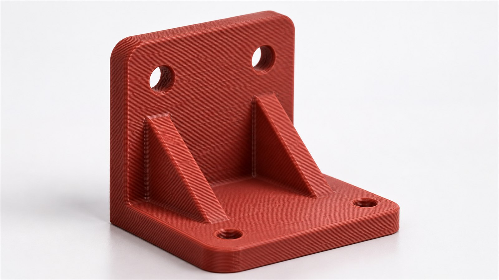
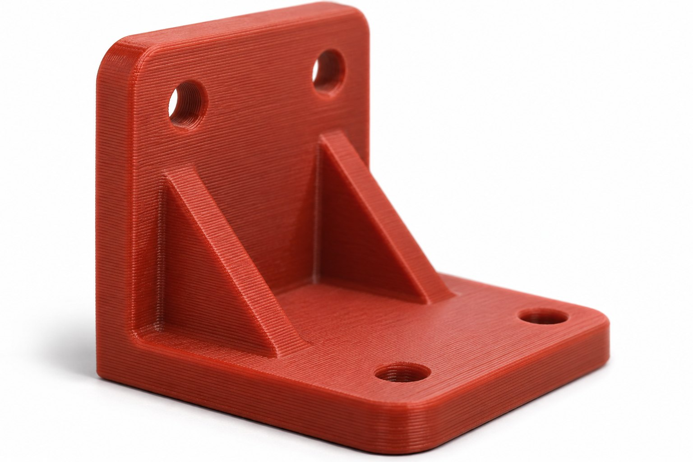
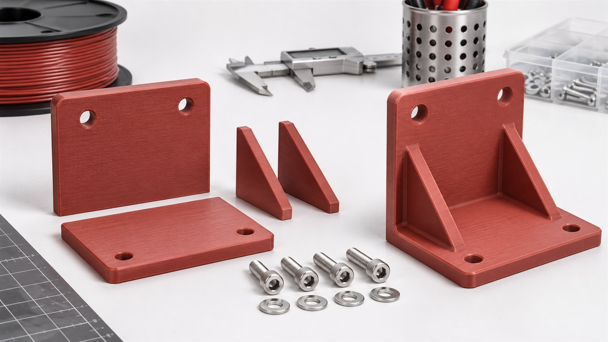

Кронштейн держателя датчика для производственной линии. Печатный образец проверяет монтажные расстояния и доступ к крепежу.
Горизонтальная полка крепится к столу, вертикальная принимает держатель датчика. Рёбра связывают угол и оставляют середину доступной для инструмента.
Габарит 80 × 60 × 80 мм. Толщина полок 8 мм, рёбер 6 мм. Четыре монтажных отверстия в основании показаны условно.
Финальные межосевые расстояния и диаметр под крепёж берутся из чертежа линии.
Пластик примерочного образца. Прочность рабочего кронштейна не подтверждена.
Слой и заполнение, гироид. Пять контуров по наружной стенке.
Масса одной печатной детали. Крепёж и датчик в расчёт не входят.


Пример — концепт для портфолио. Размеры, масса, настройки и срок условные; пригодность определяется отдельно.
118 г × 10 ₽/г
Ориентир: 3 рабочих дня после согласования.Моделирование и нагрузочные испытания — отдельно.
Этот лист не задаёт допустимую нагрузку и не заменяет расчёт рабочего узла. Для изготовления нужны посадочные размеры, направление усилий и условия среды.
Изображения — художественная визуализация концепта. Геометрию и размеры уточняют по чертежам.